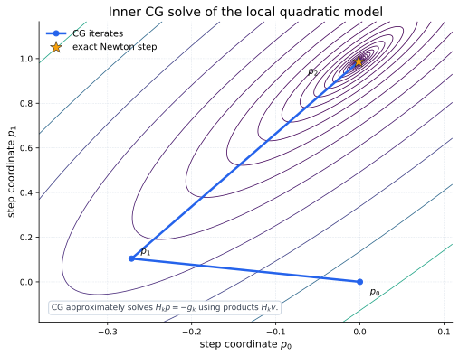
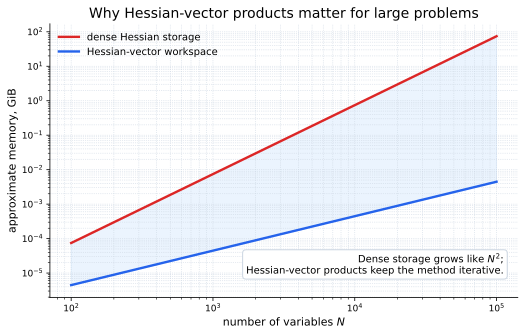
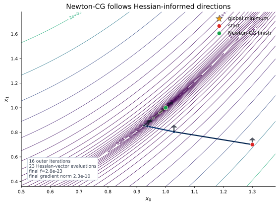

Core Idea
Near the current point \(x_k\), Newton methods replace the objective with a quadratic model:
If \(H_k\) is positive definite, the exact Newton step solves
Newton-CG does not usually invert \(H_k\). It applies conjugate gradient iterations to the linear Newton system and then performs a line search along the resulting direction.
Conjugate Gradient Inside Newton
Conjugate gradient builds the step from repeated Hessian-vector products. That is the key large-scale advantage: the algorithm can ask for \(H_kv\) without ever materializing every entry of \(H_k\).


Rosenbrock Example
For the Rosenbrock function, the Hessian is sparse and banded. The interior diagonal and neighbor terms are
The endpoint diagonal terms are
Supplying \(H(x)p\) is enough for SciPy's Newton-CG implementation:

Using SciPy
In SciPy, use method="Newton-CG". Provide
jac and either a full Hessian through hess
or a Hessian-vector product through hessp.
import numpy as np
from scipy.optimize import minimize
def rosen(x):
return np.sum(100.0 * (x[1:] - x[:-1]**2.0)**2.0 + (1 - x[:-1])**2.0)
def rosen_der(x):
xm = x[1:-1]
xm_m1 = x[:-2]
xm_p1 = x[2:]
der = np.zeros_like(x)
der[1:-1] = 200 * (xm - xm_m1**2) - 400 * (xm_p1 - xm**2) * xm - 2 * (1 - xm)
der[0] = -400 * x[0] * (x[1] - x[0]**2) - 2 * (1 - x[0])
der[-1] = 200 * (x[-1] - x[-2]**2)
return der
def rosen_hess_p(x, p):
x = np.asarray(x)
Hp = np.zeros_like(x)
Hp[0] = (1200 * x[0]**2 - 400 * x[1] + 2) * p[0] - 400 * x[0] * p[1]
Hp[1:-1] = (
-400 * x[:-2] * p[:-2]
+ (202 + 1200 * x[1:-1]**2 - 400 * x[2:]) * p[1:-1]
- 400 * x[1:-1] * p[2:]
)
Hp[-1] = -400 * x[-2] * p[-2] + 200 * p[-1]
return Hp
x0 = np.array([1.3, 0.7, 0.8, 1.9, 1.2])
result = minimize(
rosen,
x0,
method="Newton-CG",
jac=rosen_der,
hessp=rosen_hess_p,
options={"xtol": 1e-8, "disp": True},
)
print(result.x)When To Use It
| Use Newton-CG when | Prefer another method when |
|---|---|
| You can compute gradients and Hessian-vector products for a smooth unconstrained problem. | You only have objective values; use a derivative-free method such as Nelder-Mead or Powell. |
| The problem is large enough that dense Hessian storage is unattractive. | The Hessian is badly conditioned or indefinite; trust-region Newton methods can be more reliable. |
| You want second-order curvature without explicitly inverting or factorizing the Hessian. | The problem is small and dense; direct Newton or trust-exact may need fewer outer iterations. |
hessp when the Hessian is
sparse, structured, or available through automatic differentiation.
It keeps the method closer to the math while avoiding dense matrix
bookkeeping.